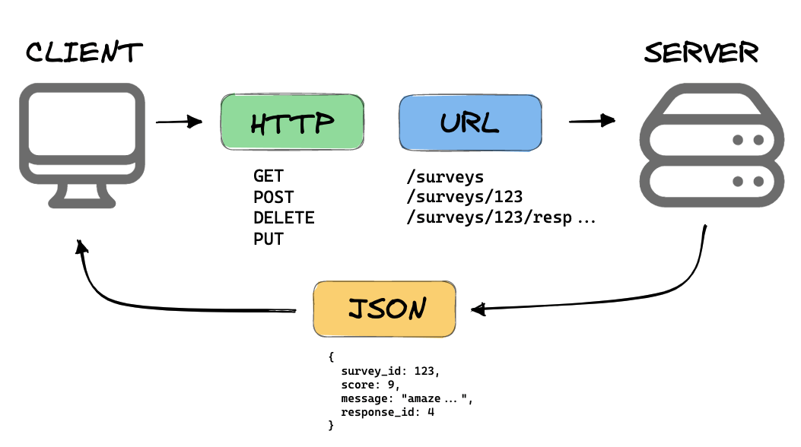
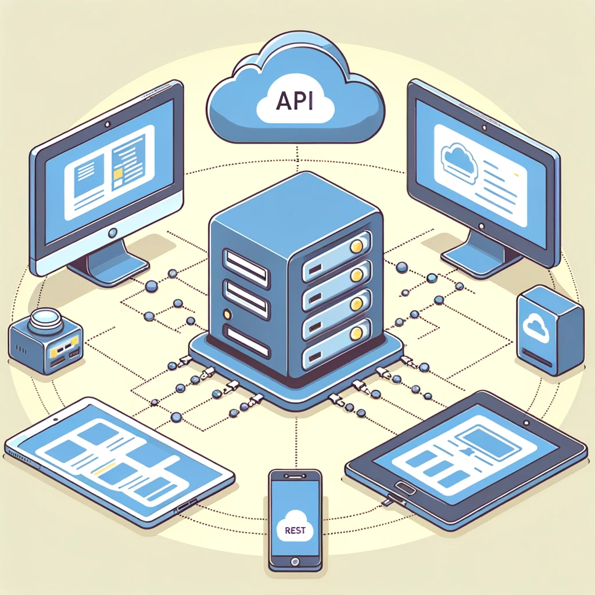

TCH056 - Programmation Web
Chapitre 06: Les APIs REST
Anis Boubaker, Ph.D.
Prof. Enseignant en informatique
Plan du chapitre
Qu'est-ce qu'une API ?
API signifie Interface de Programmation d'Application.
Elles permettent la communication entre différents logiciels.
Exemple : L'API de Twitter permet d'intégrer ses fonctionnalités dans d'autres applications.
Une API offre des services
API REST
REST signifie Representational State Transfer.
Utilise des requêtes HTTP pour GET, POST, PUT, DELETE des données.
Exemple : API RESTful de GitHub.
API SOAP
SOAP signifie Simple Object Access Protocol.
Basé sur XML, plus strict et sécurisé.
Exemple : Service web de Microsoft Exchange.
API GraphQL
GraphQL est une alternative à REST.
Offre aux clients de demander exactement les données dont ils ont besoin.
Évite les problèmes de surcharges de données (overfetching) ou des demandes de données insuffisantes (underfetching)
Exemple : API de GitHub v4.
Architecture sans état (Stateless)
Chaque requête de l'API REST est indépendante des autres.
Le serveur ne stocke pas d'informations sur l'état du client entre les requêtes.
Exemple : Une requête GET pour récupérer des données ne dépend pas des requêtes précédentes.
Utilisation des méthodes HTTP
- GET - Récupérer des données.
- POST - Créer une nouvelle ressource.
- PUT - Mettre à jour une ressource existante.
- DELETE - Supprimer une ressource.
Exemple : POST /users pour créer un nouvel utilisateur.
Requête REST: Méthode + Ressource
Source: mannhowie.com
Indépendante du langages ou de la plateforme
Une API REST permet d'intéragir avec la couche métier:
- Peu importe l'interface usager (Web, mobile, desktop)
- Peu importe la technologie sous jacente (langage de programmation, cadriciels, etc.)
Une API Universelle
Standards Ouverts
- La communication se fait à travers le prototcole HTTP
- Les données sont échangées en utilisant des formats largement supportés comme JSON (principalement) ou XML.
Plan du chapitre
Structure des URL et des ressources
Les URL identifient les ressources, et la structure des URL doit être logique et prévisible.
Exemple : GET /users/123 pour récupérer l'utilisateur avec l'ID 123.
Les ressources sont souvent organisées en collections et éléments.
Formats de réponse
Les API REST peuvent retourner des données dans différents formats.
- JSON (JavaScript Object Notation) - Format léger et facile à lire.
- XML (eXtensible Markup Language) - Plus verbeux, utilisé dans les systèmes plus anciens.
Le format JSON est davantage utilisé que le format XML (interprété nativement par JavaScript)
Exemple de Réponse JSON
Voici comment une API REST pourrait retourner une liste d'utilisateurs en format JSON :
{
"users": [
{
"id": 1,
"name": "Alice Dupont",
"email": "alice.dupont@example.com",
"role": "admin"
},
{
"id": 2,
"name": "Bob Martin",
"email": "bob.martin@example.com",
"role": "user"
},
{
"id": 3,
"name": "Charlie Nom",
"email": "charlie.nom@example.com",
"role": "user"
}
]
}
Exemple de Réponse XML
Voici comment une API REST pourrait retourner une liste d'utilisateurs en format XML :
<users>
<user>
<id>1</id>
<name>Alice Dupont</name>
<email>alice.dupont@example.com</email>
<role>admin</role>
</user>
<user>
<id>2</id>
<name>Bob Martin</name>
<email>bob.martin@example.com</email>
<role>user</role>
</user>
<user>
<id>3</id>
<name>Charlie Nom</name>
<email>charlie.nom@example.com</email>
<role>user</role>
</user>
</users>
Planification des Ressources
Identifier les principales entités de l'application (ex: utilisateurs, articles, commentaires).
Chaque entité devient une ressource dans l'API.
Exemples :
- Utilisateurs (users)
- Articles (articles)
- Commentaires (comments)
Définition des Routes et Méthodes
Créer des routes pour interagir avec les ressources.
Utiliser les méthodes HTTP appropriées (GET, POST, PUT, DELETE).
Exemples de routes :
GET /users - Récupérer la liste des utilisateurs
POST /users - Créer un nouvel utilisateur
GET /users/{id} - Récupérer un utilisateur spécifique
PUT /users/{id} - Mettre à jour un utilisateur
DELETE /users/{id} - Supprimer un utilisateur
Bonnes Pratiques: Conventions de nommage
Utiliser des noms clairs et cohérents pour les routes.
Préférer le pluriel pour les noms de ressources.
Exemple : /users pour les utilisateurs, /articles pour les articles.
Bonnes Pratiques: Versioning
- Inclure la version de l'API dans l'URL pour faciliter les mises à jour futures.
- Utiliser la technique du versionnage sémantique
Exemple : /v1.1.0/users, /v2.2.1/users
Bonnes Pratiques: Sécurité
Assurer la sécurité des données et des communications.
- Utiliser HTTPS pour chiffrer les données en transit.
- Authentification (ex: OAuth, JWT).
- Validation et nettoyage des entrées pour prévenir les injections SQL.
Bonnes Pratiques: Gestion des Erreurs
Fournir des messages d'erreur clairs et informatifs.
- Utiliser des codes d'état HTTP appropriés.
- Messages d'erreur en format JSON avec code d'erreur, message et éventuellement des détails.
Bonnes Pratiques: Documentation
Une documentation complète et à jour est cruciale.
- Utiliser des outils comme Swagger ou Redoc pour créer une documentation interactive.
- Inclure des exemples de requêtes et de réponses.
Bonnes Pratiques: Performance
Optimiser la performance de l'API pour une meilleure expérience utilisateur.
- Mise en cache des réponses lorsque c'est possible.
- Limitation (rate limiting) pour prévenir l'abus de l'API.
- Utilisation de techniques de pagination pour les grandes collections de données.
Bonnes Pratiques: Scalabilité
Concevoir l'API pour qu'elle puisse gérer l'augmentation du trafic.
- Architecture microservices pour faciliter la montée en charge.
- Équilibrage de charge et utilisation de serveurs de réplication.
Plan du chapitre
Accès à une API REST
Tous les langages de programmation qui permettent la communication à travers le port HTTP permettent de ce connecter à une API REST.
Lors de la conception d'une API REST, plusieurs outils permettent d'y accéder aux fins de tests:
- Postman
- Insomnia
- Thunder Client (VS Code)
- ...
Exemples d'APIs librement accessibles
- OpenWeatherMap: Données météorologiques globales (prévidions + historiques)
- The Movie Database: Base de données communautaire de films et de séries TV
- JokeAPI: Blagues dans diverses catégories
- NASA API: Accès à une multitude de données spatiales, y compris des images de la NASA, des informations sur les missions, et plus encore.
- Random User Generator: Utile pour générer des profils d'utilisateurs fictifs pour des tests ou des maquettes
Communication REST avec Javascript
Pour ne pas bloquer la pile d'exécution, les communications avec une API se font de façon asynchrone.
Plusieurs méthodes permettent la communication HTTP asynchrone (notamment avec une API REST):
- L'objet XMLHttpRequest: Objet disponible dans tous les navigateurs depuis IE5 (1999)
- Plusieurs librairies: Comme jQuery (généraliste) et Axios (spécifique aux requêtes)
-
La fonction
fetch: Méthode moderne implantée dans tous les navigateurs contemporains
La fonction fetch
-
fetchutilise les 'Promesses' qui est un mécanisme d'exécution des fonctions de façon asynchrone -
Une requête HTTP se fait en deux étapes avec fetch:
fetch("URI", { ...options }) .then((response)=>{ //fonction de rappel qui traite la réponses HTTP //et retourne les données (fonction asynchrone) }) .then((data)=>{ //fonction de rappel pour traiter les données }) .catch((error)=>{ //fonction de rappel pour traiter les erreurs //éventuelles. })
Exemple avec fetch (GET)
fetch("https://jsonplaceholder.typicode.com/posts/3",
{ method: "GET" })
.then((response) => {
if (!response.ok) {
throw new Error("Erreur HTTP: " + response.statusText);
}
return response.json();
})
.then((data) => {
if (data.error)
throw new Error("Erreur reçue du serveur: " + data.error);
console.log(data);
})
.catch((error) =>
console.error(
"Il y'a eu une erreur lors de l'obtention des données:" +
error.message
)
);
Exemple avec fetch (POST)
fetch('https://jsonplaceholder.typicode.com/posts', {
method: 'POST',
headers: {
'Content-Type': 'application/json',
},
body: JSON.stringify({
title: 'Mon post',
body: 'Je teste si mon post sera stocké',
userId: 1,
}),
})
.then(response => {
if (!response.ok) {
throw new Error('Erreur reçue du serveur'+response.statusText);
}
return response.json();
})
.then(data => console.log(data))
.catch(error => console.error('Il y a eu une erreur:', error.message));
Exemple avec fetch (PUT)
// L'URL de l'API pour le post avec l'ID 1
const url = 'https://jsonplaceholder.typicode.com/posts/1';
// Les données que nous souhaitons mettre à jour
const data = {
id: 1, // Normalement, vous n'avez pas besoin de fournir
// l'ID dans le corps pour une requête PUT,
//mais JSONPlaceholder l'exige pour la simulation.
title: 'Nouveau titre',
body: 'Nouveau contenu',
userId: 1,
};
// Options de la requête fetch pour effectuer une opération PUT
const fetchOptions = {
method: 'PUT', // Méthode HTTP utilisée
headers: {
// Indique que le corps de la requête est au format JSON
'Content-Type': 'application/json',
},
// Convertit les données de l'objet JavaScript en chaîne JSON
body: JSON.stringify(data),
};
// Effectuer la requête PUT
fetch(url, fetchOptions)
.then(response => {
if (!response.ok) {
// Si la réponse n'est pas dans la plage de succès HTTP (200-299),
// lance une erreur avec le statut pour indiquer l'échec de la requête
throw new Error('Le serveur a renvoyé une erreur');
}
return response.json(); // Parse la réponse en JSON
})
.then(updatedPost => {
console.log('Post mis à jour:', updatedPost); // Affiche les données du post mis à jour
})
.catch(error => {
console.error("Il y a eu une error lors de l'opération fetch:", error);
});
Plan du chapitre